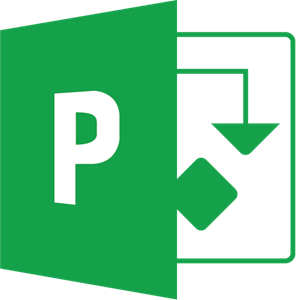
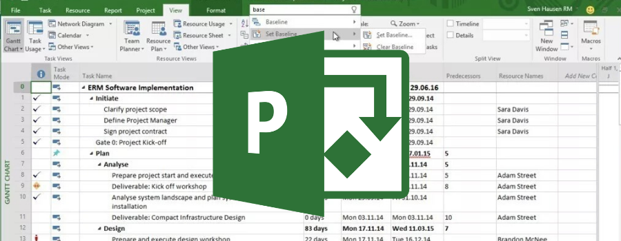
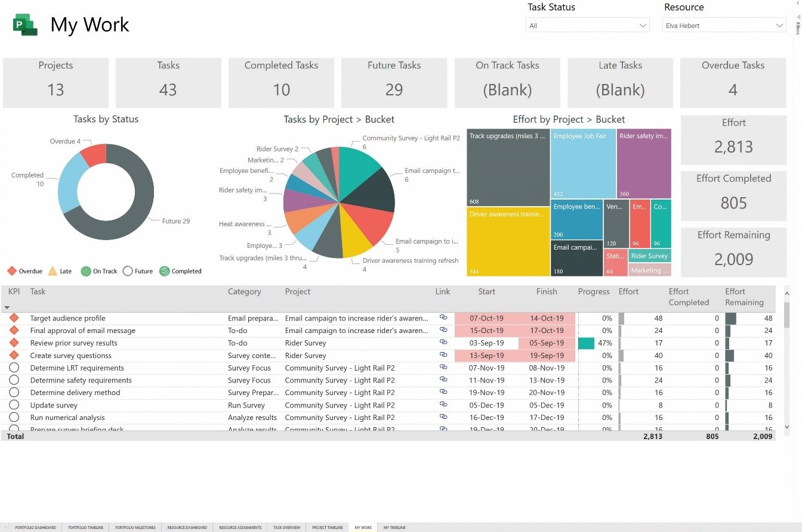
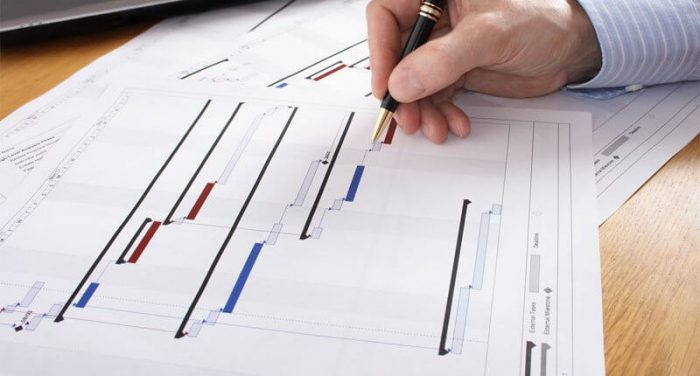
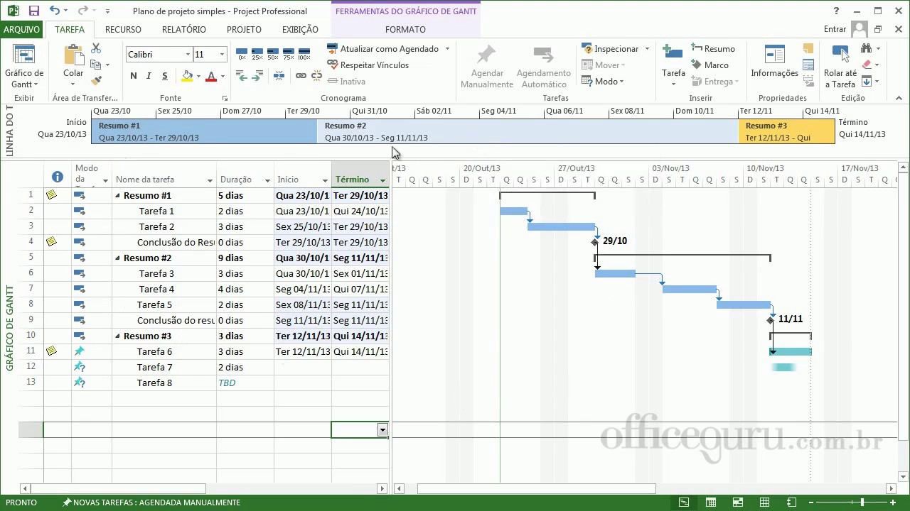

|  | MICROSOFT PROJECT |
Apresentação
|  | MS Project é um software de Gerenciamento de Projetos
que atua em diferentes
etapas da gestão. Porém, as esferas em que ele é mais diretamente relacionado são nas missões
de planejamento e controle.
|
| O MS Project é uma ferramenta de apoio com um
grande número de recursos para gerenciar um projeto do início ao fim. A plataforma apoia desde
o planejamento até o controle do projeto, desde os casos mais simples até os mais complexos.
|
 |
|  | O MS Project é o que permite ao responsável pelo
planejamento, execução ou controle de uma série de atividades que se relacionam, trabalhar alinhado
à utilização de recursos, custos, cronograma e as principais áreas do gerenciamento de projetos,
segundo o modelo proposto pelo PMBOK (guia de grande aceitação no mundo para boas práticas em
gerenciamento de projetos).
|
| O MS Project não abrange todas elas, mas trata de
algumas como: partes da gestão da integração e da comunicação, gestão de escopo, tempo e recursos,
por exemplo.
|  |